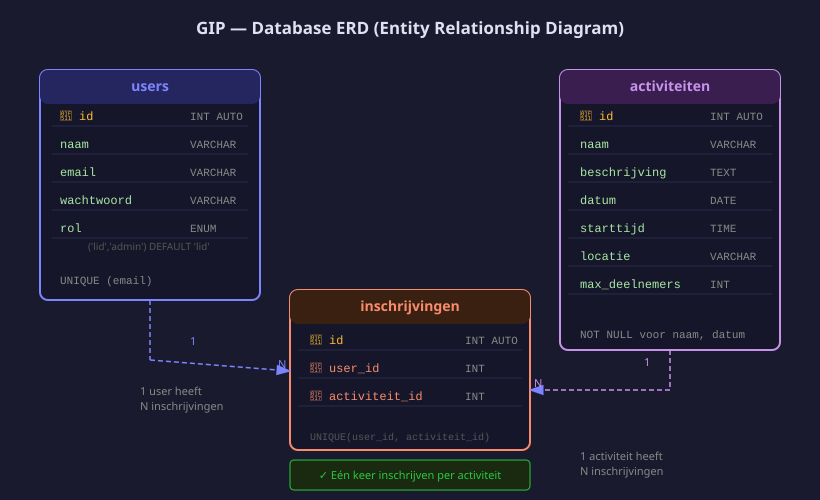

Database aanmaken
- De drie tabellen van het Sportclub Portaal uitleggen
- De database aanmaken in MySQL Workbench via een SQL-script
- Testdata invoegen voor alle tabellen
- De database koppelen aan
server.js
1. Welke tabellen heb je nodig?

| Tabel | Wat staat er in |
|---|---|
users | Naam, e-mail, wachtwoord, rol van elke gebruiker |
activiteiten | Naam, datum, locatie en max. deelnemers van elke activiteit |
inschrijvingen | Welk lid is ingeschreven voor welke activiteit |
2. SQL-script uitvoeren
Open MySQL Workbench, open een nieuw query-venster en voer dit script uit:
-- Stap 1: database aanmaken (IF NOT EXISTS = geen fout als de database al bestaat)
CREATE DATABASE IF NOT EXISTS jouw_db;
-- Stap 2: vertel MySQL welke database we gebruiken voor de rest van het script
USE jouw_db;
-- ── Tabel: users ──────────────────────────────────────────────────────────────
CREATE TABLE IF NOT EXISTS users (
-- id: uniek getal dat automatisch ophoogt (1, 2, 3, ...)
-- PRIMARY KEY: het veld waarmee je een rij uniek identificeert
id INT AUTO_INCREMENT PRIMARY KEY,
-- NOT NULL: dit veld mag nooit leeg zijn
naam VARCHAR(100) NOT NULL,
-- UNIQUE: geen twee accounts met hetzelfde e-mailadres
email VARCHAR(150) NOT NULL UNIQUE,
-- VARCHAR(255): bcrypt-hashes zijn altijd 60 tekens, 255 is veilige marge
wachtwoord VARCHAR(255) NOT NULL,
-- DEFAULT 'gebruiker': nieuwe accounts krijgen automatisch de rol 'gebruiker'
rol VARCHAR(20) NOT NULL DEFAULT 'gebruiker'
);
-- ── Tabel: activiteiten ───────────────────────────────────────────────────────
CREATE TABLE IF NOT EXISTS activiteiten (
id INT AUTO_INCREMENT PRIMARY KEY,
naam VARCHAR(150) NOT NULL,
-- TEXT: voor langere teksten zonder vaste maximumlengte
-- Geen NOT NULL: beschrijving is optioneel
beschrijving TEXT,
-- DATE slaat alleen de datum op (YYYY-MM-DD), geen uur
datum DATE NOT NULL,
-- TIME slaat alleen het uur op (HH:MM:SS)
starttijd TIME NOT NULL,
locatie VARCHAR(200),
-- DEFAULT 20: als je max_deelnemers weglaat bij INSERT, wordt het 20
max_deelnemers INT NOT NULL DEFAULT 20
);Dit zorgt ervoor dat een lid zich maar één keer kan inschrijven voor dezelfde activiteit — de database weigert een tweede inschrijving automatisch.
Als je een gebruiker of activiteit verwijdert, worden de bijhorende inschrijvingen automatisch ook verwijderd.
3. Testdata invoegen
USE sportclub_db;
-- Testleden (wachtwoord wordt later gehashed — PLACEHOLDER is tijdelijk)
INSERT INTO users (naam, email, wachtwoord, rol) VALUES
('Admin', 'admin@sportclub.be', 'PLACEHOLDER', 'admin'),
('Jana Peeters', 'jana@leden.be', 'PLACEHOLDER', 'lid'),
('Liam Claes', 'liam@leden.be', 'PLACEHOLDER', 'lid');
-- Activiteiten
INSERT INTO activiteiten (naam, beschrijving, datum, starttijd, locatie, max_deelnemers) VALUES
('Zaalvoetbal', 'Beginnerssessie zaalvoetbal', '2026-02-10', '18:00', 'Sportzaal A', 12),
('Yoga', 'Ontspanningssessie, breng een mat mee', '2026-02-12', '19:30', 'Turnzaal', 15),
('Basketbal', 'Training voor -16 jaar', '2026-02-17', '17:00', 'Sportzaal B', 16),
('Wandelclub', 'Wandeling 10 km, stevige schoenen', '2026-02-21', '09:00', 'Markt', 30);
-- Inschrijvingen
INSERT INTO inschrijvingen (user_id, activiteit_id) VALUES
(2, 1), -- Jana -> Zaalvoetbal
(2, 2), -- Jana -> Yoga
(3, 1), -- Liam -> Zaalvoetbal
(3, 3); -- Liam -> Basketbal4. Database koppelen aan server.js
const pool = mysql.createPool({
host: 'localhost', // MySQL draait op dezelfde pc als de server
port: 3306, // standaard MySQL-poort
user: 'root', // standaard MySQL-gebruiker bij een lokale installatie
password: 'jouwMySQLwachtwoord', // ← vervang door jouw eigen wachtwoord
database: 'jouw_db', // ← de naam die je bij CREATE DATABASE opgaf
});Test de verbinding
app.get('/api/test-db', async (req, res) => {
// pool.execute() voert de SQL-query uit en geeft een array terug.
// Destructuring: [rijen] pakt het eerste element (de resultaatrijen).
// Het tweede element (kolominfo) negeren we.
const [rijen] = await pool.execute('SELECT * FROM activiteiten');
// res.json() zet het JS-array om naar JSON en stuurt het naar de browser
res.json(rijen);
});Open http://localhost:3000/api/test-db — je ziet de activiteiten uit de database. Werkt het? Dan is de verbinding OK.
| Tabel | Kolommen |
|---|---|
users | id, naam, email, wachtwoord, rol |
activiteiten | id, naam, beschrijving, datum, starttijd, locatie, max_deelnemers |
inschrijvingen | id, user_id, activiteit_id |
Oefeningen
Voer het volledige SQL-script uit en verifieer de resultaten.
- Open MySQL Workbench en maak een nieuw query-venster
- Voer het
CREATE TABLE-script uit - Voeg de testdata in
- Schrijf een SELECT-query die alle activiteiten toont gesorteerd op datum
- Schrijf een JOIN-query die toont welke leden zijn ingeschreven voor welke activiteit
Koppel de database aan de server en toon de data via de browser.
- Pas de pool-configuratie aan in
server.js - Voeg de
GET /api/test-dbroute toe - Start de server en open de route in je browser
- Bevestig dat je de vier activiteiten als JSON ziet
Huistaak
Opdracht: Database volledig opzetten
Deel 1 — 5 punten: SQL-script
- Voer het volledige
CREATE TABLE-script uit in MySQL Workbench - Voeg alle testdata in (gebruikers, activiteiten, inschrijvingen)
- Screenshot van de drie tabellen in de Workbench-navigator
Deel 2 — 3 punten: Queries
- Schrijf een query die alle leden toont (geen admin)
- Schrijf een JOIN-query die toont: naam van lid, naam van activiteit, datum
Deel 3 — 2 punten: Koppeling
- Koppel de database aan server.js
- Toon de activiteiten via
/api/test-dbin de browser
Vragenlijst
Controleer of je de leerstof van dit hoofdstuk begrijpt.
Welke tabel koppelt gebruikers aan activiteiten?
Wat doet UNIQUE (user_id, activiteit_id) in de inschrijvingen-tabel?
Wat doet ON DELETE CASCADE bij een foreign key?
Hoe test je of de database-koppeling werkt vanuit de browser?
Welk datatype gebruik je voor het wachtwoord in de users-tabel?